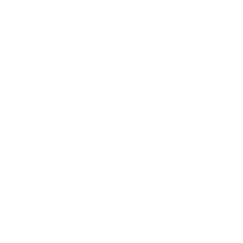

Seja Bem-vindo!
Abaixo você poderá encontrar alguns de meus projetos, desenvolvidos durante o meus estudos e aprendizados
Projeto Android

Projeto desenvolvido para se adequar a diferentes tamanhos de tela, aplicando conhecimentos sobre resposividade em sites
Projeto desenvolvido com objeto de aplicar as habilidades em imagens, aplicando efeitos com o paralax
Projeto desevolvido aplicando conhecimentos de iFrames